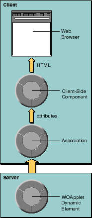

Table of Contents
Table of Contents  Next Section
Table of Contents
Next Section
Table of Contents  Previous Section
Previous Section
WebObjects applications are event driven. The events that trigger actions are HTTP requests. A WebObjects application receives an HTTP request from the client, processes it, and returns a response page. That is, the only communication that takes place between the client and the WebObjects application on the server results in a page being redrawn (or a new page being generated).
When client-side components are used, an HTTP request can result in either the re-synchronization of state or the return of a new page. Thus, state can be synchronized without the page having to be redrawn (see Figure 13).

Figure 13. Client-Side Java Components
Server-side dynamic elements always generate HTML, which means that they are limited to what HTML looks like and what HTML can do. You can create client-side components that look like just about any imaginable control: a dynamic calendar, a spreadsheet, or a graphing tool.
Table of Contents Next Section